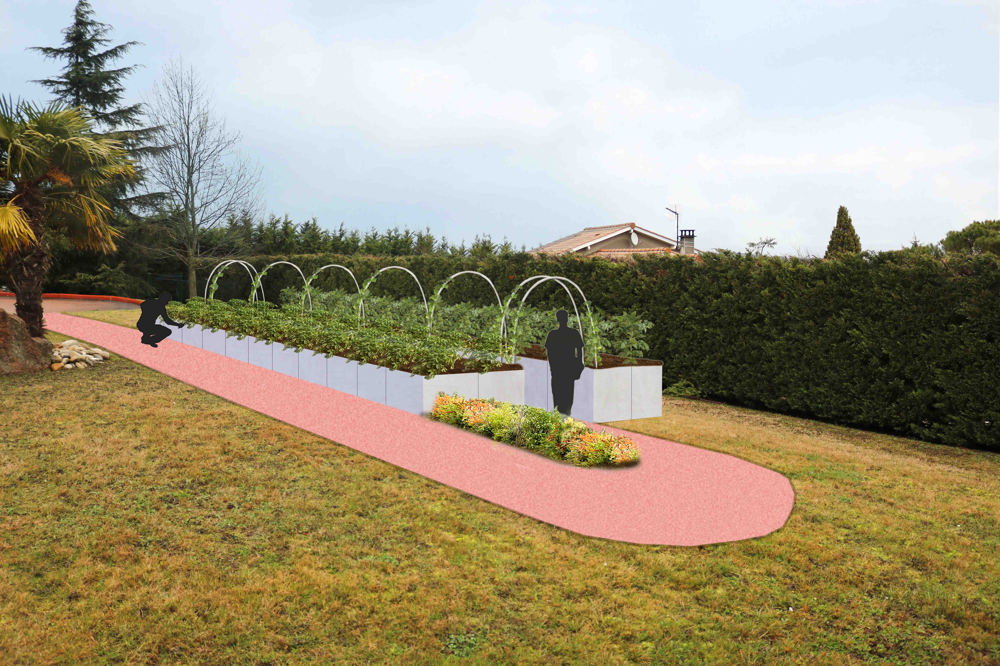

JARDIN SUSPENDU
Réalisé pour un particulier, ce jardin potager est unique. Il est surélevé pour supprimer le désagrément de devoir se baisser pour jardiner, à la demande du client pour des raisons de santé. le projet est en cours, les images de synthèse sont celles de l'avant-projet, avec deux propositions de réalisations différentes. Un chemin en béton jaune ou rouge, un jardin en bois ou en béton.
